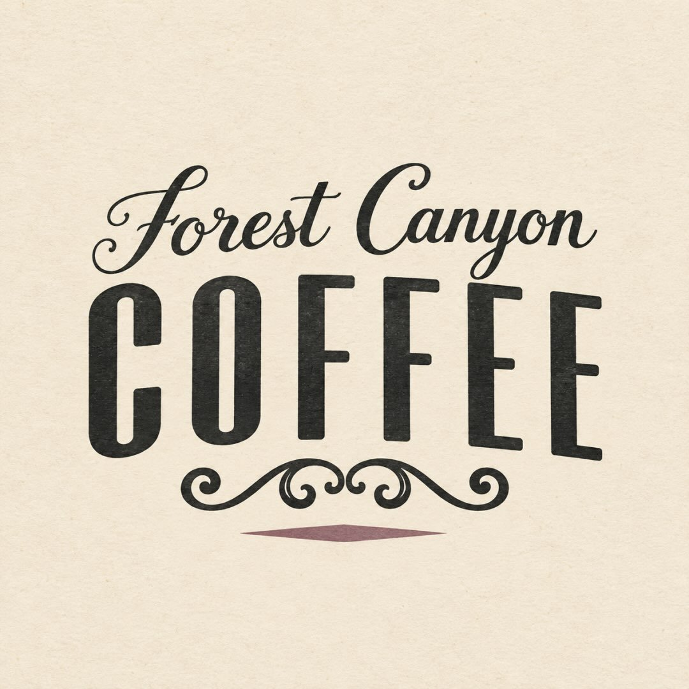

In their words
“Welcome to Forest Canyon Coffee! Proud to be part of the Lake Tapps community. Whether you're a longtime regular or stopping by for the first time...”The stand, on Instagram · October 2026
The name has been on this corner for years, and neighbors have voted it a Nextdoor Neighborhood Fave. On weekdays the window opens before the sun is up.
- Drive-thruLook for the DRIVE THRU sign on the stand.
- Tables out frontSit under the eave when the weather's good.
- More than coffeeSoup, sandwiches, baked goods and ice cream.